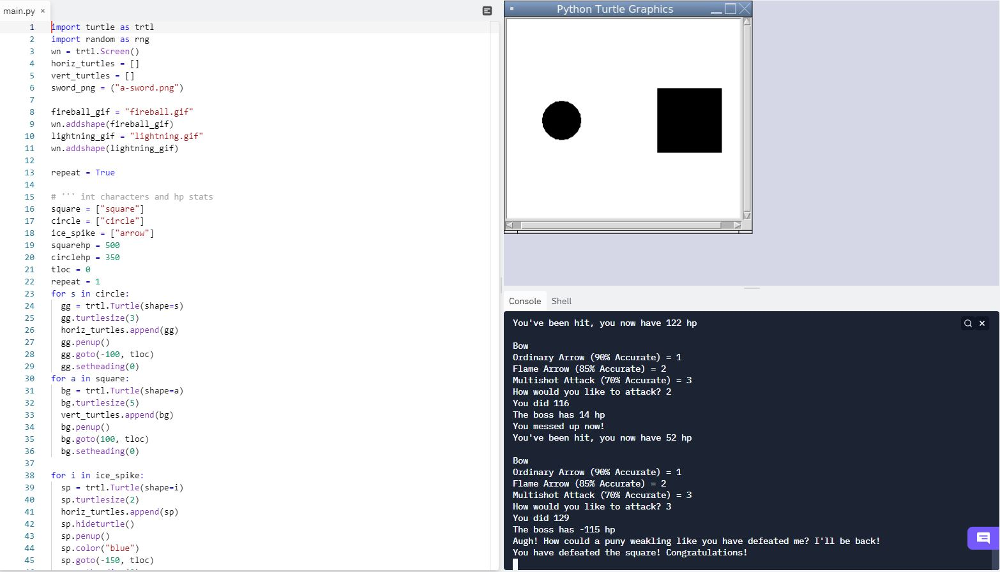
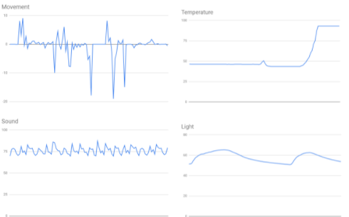

Adam's Portfolio Page!
1.1.9 Project Circle vs. Square

In this project me and my partner made a game called Circle Vs. Square. In this game we made two turtles to start as the playable character and the boss.
The game started with asking the user what class they would like to be. Then depending on their choice they were given three attacks to choose from. Each attack had their own accuracy. Using randomizers
we randomized damage and accuracy between two numbers. This way the move did random damage and had a chance of missing. After this we coded fun moves for each attack in each class. We made turtles for
for some moves to make them cooloer. Such as a fireball and ice spike. After this we coded the square to attack the circle. We made custom attacks and random damage for it too. We then made a you lose
statement and a you win statement. Then lastly we looped all of the code so that as long as they are both alive the code will repeat and give the user multiple turns. This is the circle vs square game.
1.2.5 Project Candy Catch Game

In this project we made a Halloween themed game. The goal of the game is to get as many candies as you can into the halloween basket. The candy goes
left to right at the top of the screen. It move quickly to add difficulty to the game. When the user clicks the screen the candy falls, if the user lands the candy into the basket they get a point.
When the user does not land a candy into the basket the game ends and there is a game over message. In this project we used a list with diffrent turtle shapes and made the candy variable chose a random choice.
This made the candy random everytime the candy was drawn. We used code that checked if there was a collision everytime the screen was clicked. If there was no collision then the user lost. This is the candy catch game.
ABC Clicker
Me and my partner created a clicker game. The game is based around the alphabet and the goal is to unlock letters until you can buy z. We made it so the shop increases the buy price to add difficulty.
The letter that the user has moves when clicked. If you want tp increase the amount you get for each click that is something you can buy. In addition to all of this we had change of backgrounds and diffrent sounds around the game. We actually
had a button to turn on and off the music. In our project we also used diffrent backgrounds and costumes. At the begining of the game there is a start screen and there is an end game screen. This is the ABC Clciker.
3.1.6 Rover Phone Home Project.

My group and I did a project where we analyzed the data given to us and we had to decide what biome the rover was in. In the is project we looked at temperature, sound, light, and movement.
The two biggest clues was the wind intensity and sound. This is because our graphs were very close to the one we modeled for rocky mountains. Wind intensity was very intense in our data and that was a characteristic of rocky mountains.
In adition, the sound was very similar. our data showed that the sound was very low and constand. This is similair to rocky mountains because they have a constand howls from the wind. Next, in our graph above the temperature is low but
increases very quickly. We know that in the rocky mountains the temperature increases very quickly during daytime so this data was also very important in our decision making. Lastly we can see that the light is pretty intense. We can
also see this in our graphs. The light is intense in our graphs but with the clouds the light varies. This can be seen by the decreases in our graph. In conclusion, this is why we believe that the data given to us tells us that the rover is in the rocky mountains.